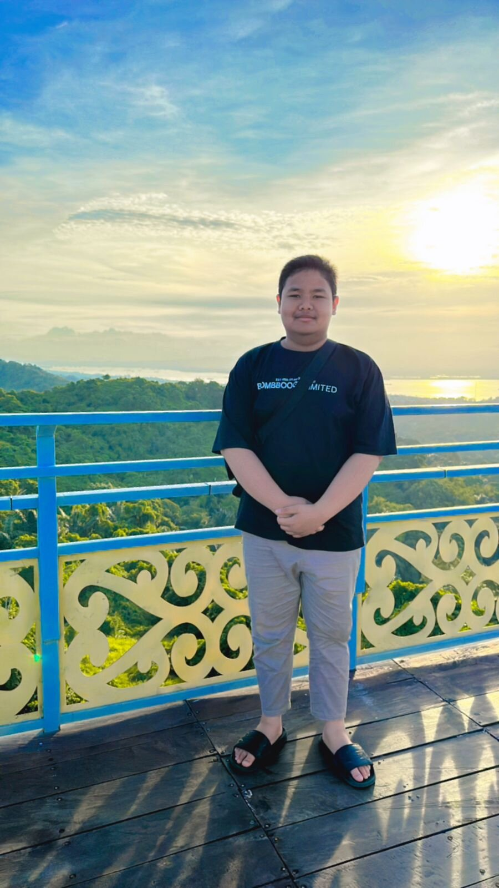

Muhammad Rafi Astiardi
Web Developer & Graphic Designer
Banjarmasin, Indonesia
rafiastiardi7@Gmail.com
Bergabung
2024
Saya adalah seorang pengembang web yang antusias dalam menciptakan pengalaman belajar digital yang modern. Dengan pengalaman di bidang front-end development dan Graphic Design, saya berkomitmen untuk terus belajar dan berbagi ilmu kepada komunitas.
Keahlian & Teknologi
HTML5
CSS3
Bootstrap CSS
Tailwind CSS
Figma
Canva
Proyek Unggulan
Website Materi Sejarah Singasari 1
Dashboard Siswa dan Guru
Pendidikan
-
Perkembangan Perangkat Lunak dan Gim
SMKN 2 Banjarmasin (2024 - Sekarang)
Sertifikat
- Juara 1 (Penata Musik Terbaik) Festival Tari Serumpun Melayu Pesisir VII - 2025